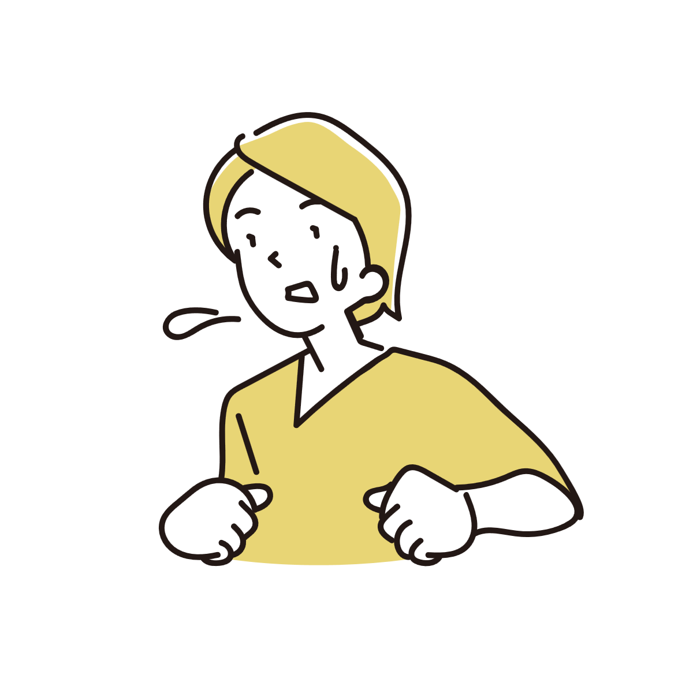
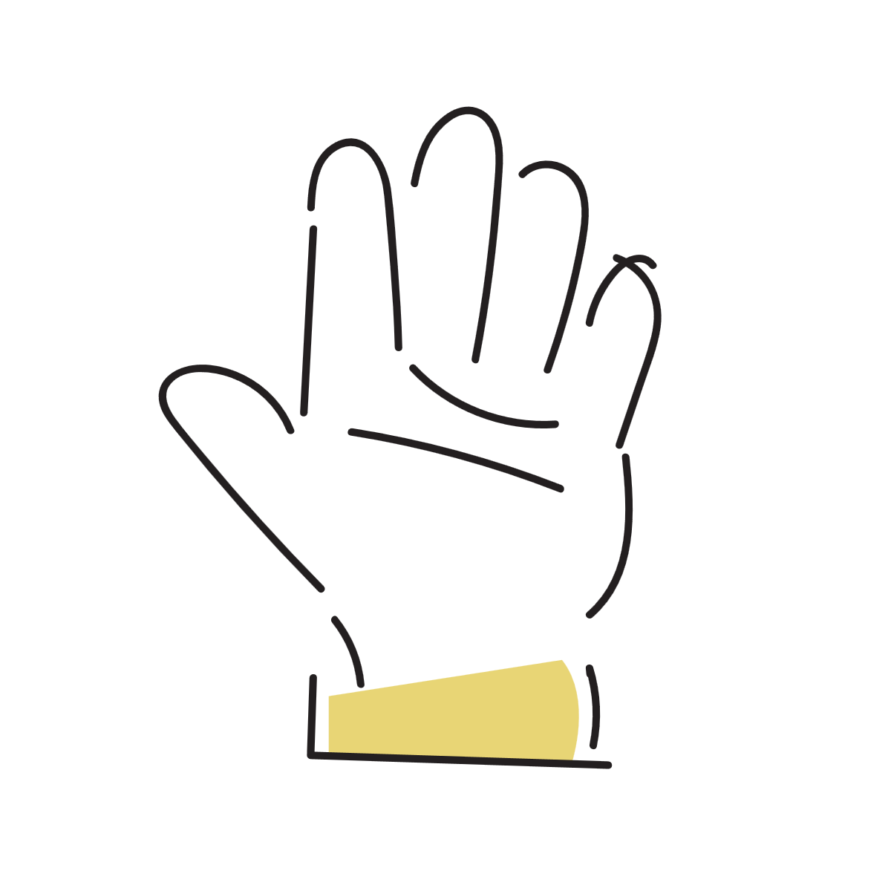

なぜ汗は「ベタつく汗」と「さらさらの汗」に分かれるのか
同じ汗でも、「さらっと乾く汗」と、「なんとなくベタベタする汗」があります。 この違いは単純に汗の量だけで決まっているわけではなく、汗の成分や汗腺の働き、皮脂や湿度など複数の要素が関係しています。

汗のほとんどは水だが、それだけではない
汗は基本的に水分ですが、完全な水ではありません。
塩分やミネラル、わずかなタンパク質なども含まれています。
本来、汗は体温を下げるための仕組みです。
皮膚の表面で蒸発するときに熱を奪うことで、体を冷やしています。
そのため理想的な汗は、「すぐ蒸発しやすい薄い汗」です。
一方で、成分が濃かったり、蒸発しにくかったりすると、肌に残る感覚が強くなり、「ベタつく汗」として感じやすくなります。
汗腺は一度「薄い汗」を作り直している
汗は汗腺の奥で作られた直後は、実はもっと塩分の多い液体に近い状態です。
そこから皮膚へ出てくる途中で、体は塩分を再吸収しています。
つまり汗腺は、「必要な水分だけを表面へ出す」ように調整しているのです。
汗をかき慣れていると薄い汗になりやすい
普段から汗をかく機会が多い人は、汗腺の調整が比較的スムーズに働きやすいとされています。
すると塩分がうまく再吸収され、さらっとした汗になりやすくなります。
逆に、急に大量の汗をかいた場合や、汗腺があまり働き慣れていない状態では、塩分を十分回収しきれず、濃い汗になりやすいことがあります。
その結果、肌に残る感覚が強くなり、ベタつきを感じやすくなる場合があります。
「ベタつき」は皮脂との混ざり方も大きい
汗だけでなく、皮脂も肌の感触へ大きく影響しています。
皮脂は肌を守るために分泌される油分です。
そこへ汗が混ざると、水分だけではない膜のような状態になり、ベタベタ感が強くなります。
特に首や背中、額、脇など皮脂分泌が多い場所では、汗のベタつきを感じやすくなります。
逆に運動後の汗は大量でも比較的さらっと感じることがあります。
これは汗の量が多く蒸発も活発なため、皮脂が相対的に薄まりやすいことも関係しています。
緊張の汗はベタつきを感じやすいことがある
汗はすべて同じ仕組みで出ているわけではありません。
体温調整の汗だけでなく、緊張やストレスによる汗もあります。
たとえば手のひらや足裏、脇などは感情の影響を受けやすい部位です。
緊張時の汗は量が少なく、局所的に出ることがあります。
すると蒸発しきらず、肌表面へ残りやすくなります。
さらに手のひらや脇は皮膚同士が接触しやすいため、湿った感覚が強調されやすくなります。
「嫌な汗」に感じやすい理由
緊張している場面では、不快感や意識の集中によって汗そのものを強く認識しやすくなります。
そのため、実際の汗の量以上に「ベタつく」「気持ち悪い」と感じる場合があります。

湿度が高いと汗は急に不快になりやすい
汗は蒸発して初めて「冷却装置」として働きます。
しかし湿度が高い環境では、水分が空気中へ逃げにくくなります。
すると汗が皮膚へ残り続け、ベタつきを感じやすくなります。
日本の夏が特に不快に感じやすいのも、この「蒸発しにくさ」が大きく関係しています。
つまり、「ベタつく汗」は汗そのものだけではなく、空気や湿度、衣類など周囲の条件によっても大きく変わります。
「良い汗」「悪い汗」と単純に分けられるわけではない
「さらさら汗は良い汗」「ベタベタ汗は悪い汗」という説明を見かけることがあります。
ただ、実際にはそこまで単純ではありません。
体調、気温、緊張状態、運動量、湿度などによって汗の性質はかなり変化します。
もちろん、汗腺がうまく働いている方が体温調整には有利と考えられています。
しかし、ベタつく汗をかいたからといって、それだけで異常というわけではありません。
汗は体を守るための自然な反応であり、その時の環境や状態を反映して変化している面も大きいのです。
参考情報と注意点
発汗量や汗の性質には個人差があります。急激な変化や日常生活へ支障が出る場合は、医療機関への相談も検討してください。
関連アイテム
 | 価格:1257円 |